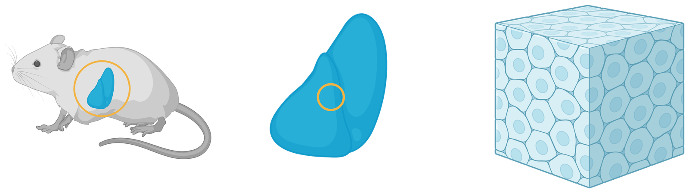
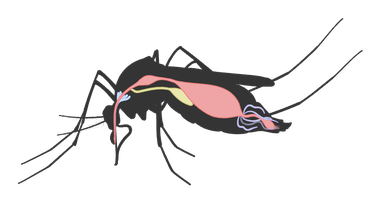
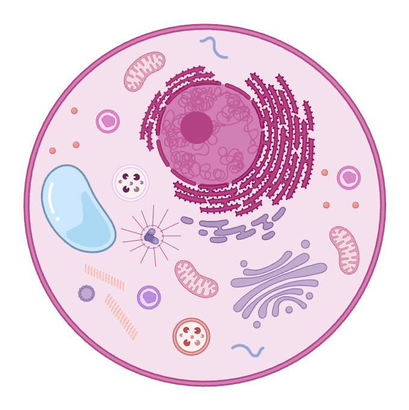
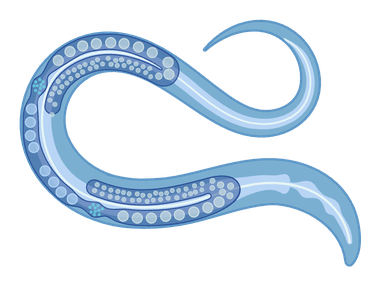
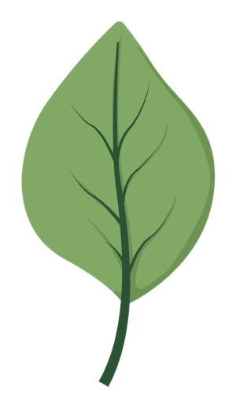

Every cell is a crowded, three-dimensional world — and for the first time we can map it, structure by structure. This is a corner of a real cell. Let's take one piece of mouse liver and zoom in, about a million times.
Chapter 1 · The organ
≈ 1 centimeterA mouse liver is about the size of a grape — a chemical factory that filters blood, stores energy and detoxifies, run by hundreds of millions of cells. We take a tiny piece of it, smaller than a grain of salt, and preserve it in an instant, so that everything inside stops mid-motion, exactly where it was in life.

Chapter 2 · The tissue
≈ 1 millimeter → 100 µmThis is a working unit of the liver, smaller than a grain of rice. To the microscope it first appears as one grey mass — then our software finds every single cell: more than 1,500 in this block, each one outlined in full 3D. Watch it happen. Until recently, seeing a whole tissue this way was impossible.
Meanwhile, elsewhere in nature

Chapter 3 · One cell
≈ 25 µm — 3,000× smaller than the liverPick one liver cell out of the crowd. It is a city: power plants, a shipping department, warehouses, a library of DNA at the center — all packed into a box three times smaller than the width of a hair. Here is one entire liver cell, and every organelle inside it.
Chapter 4 · The machines inside
≈ 1 µmEvery biology textbook has this cartoon. Click any organelle — and see what it actually looks like, in a real cell, in real data.

Meanwhile, elsewhere in nature


Chapter 5 · Now take it apart
Everything on this journey came out of one dataset — and because every point in it is labeled, that dataset works like a kit. Ask for only the blood vessels, and you get them. Only the nuclei. Every mitochondrion — all 1.3 million of them. Watch the same liver block from chapter 2 come apart, piece by piece:
Chapter 6 · Now run it backwards
The journey you just took was through structure: a snapshot of one frozen moment, with no protein names attached. Alpha Cell works on the missing dimensions. Space: where each of a cell's thousands of proteins lives, building on twenty years of the Human Protein Atlas. Time: how a living cell changes, followed through its whole division cycle. The measurements start in U2OS, a human cell line researchers know well, then move to stem cells. Together they become training data for AI models of the cell. The aim: ask the model what happens when a drug arrives or a gene breaks, get an answer in molecular terms, and check it against reality.
Keep exploring
Everything you saw is real, published, and free to explore. Fly through the full tissue volumes in your browser on OpenOrganelle, or see how the AI is trained at the CellMap Segmentation Challenge.